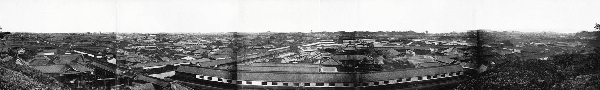
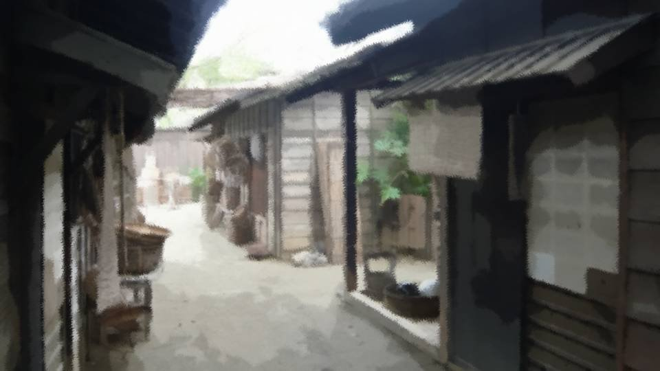

Script 00002143

「桔梗よ、今度は何を読んでいるんだ……？」
晃様と出会ってからの数日間、私はある本を読んでいた。
それはこの国の地理についてだ。
晃様と出会ってからの数日間、私はある本を読んでいた。
それはこの国の地理についてだ。
荒田という地はないものか――。
晃様のいる地に、私は興味を惹かれていた。
辺境の地とはいえ、西洋の文化が溶け込み、男だから女だからという風潮もない荒田集落。
いつか行ってみたい。
数日間、そのような童心的な興味に私は支配されていたのだ。
晃様のいる地に、私は興味を惹かれていた。
辺境の地とはいえ、西洋の文化が溶け込み、男だから女だからという風潮もない荒田集落。
いつか行ってみたい。
数日間、そのような童心的な興味に私は支配されていたのだ。
「なあ桔梗よ、聞いているのか？」
「あ、父上……」
ようやく父上が話しかけていたことに気づいた。
いつもは私の読書にあまりいい顔をしないのだが、今日はちょっと違う。
どこか表情が柔らかい。
「あ、父上……」
ようやく父上が話しかけていたことに気づいた。
いつもは私の読書にあまりいい顔をしないのだが、今日はちょっと違う。
どこか表情が柔らかい。
「桔梗、お前の結婚相手が決まったぞ」
「え？ 結婚、ですか……」
「お前ももう16だからな。 本当なら、もう少しお前の女らしさが育ってからの方がいいのだが、お前に相応しい相手を選んだつもりだ」
「…………」
いつかこういう日が来るとは思っていたが、それがこうも不意にやってくるなんて。
「え？ 結婚、ですか……」
「お前ももう16だからな。 本当なら、もう少しお前の女らしさが育ってからの方がいいのだが、お前に相応しい相手を選んだつもりだ」
「…………」
いつかこういう日が来るとは思っていたが、それがこうも不意にやってくるなんて。
この時代、親同士が結婚相手を決めるのが当たり前。
結婚当日まで相手の顔を知らないなんてこともあるのだ。
結婚当日まで相手の顔を知らないなんてこともあるのだ。
「来月相手に引きあわせる。
荷物をまとめる準備をしておくように」
そう言って父上は去っていった。
そうか…… もう、こうやって未来に夢を馳せるのも、もう終わりかな。
結婚したら、自由に読書なんてできないだろう。
そう言って父上は去っていった。
そうか…… もう、こうやって未来に夢を馳せるのも、もう終わりかな。
結婚したら、自由に読書なんてできないだろう。

――家の2階から見える帝の居城。
「はあ……」
あの城からはどのような景色が見えるのだろうか。
晃様の住む荒田集落は見えるのだろうか。
結局、荒田集落の場所は本では分からなかった。
辺境の地に住む晃様。
私の頭は、ずっとそればかり。
「はあ……」
あの城からはどのような景色が見えるのだろうか。
晃様の住む荒田集落は見えるのだろうか。
結局、荒田集落の場所は本では分からなかった。
辺境の地に住む晃様。
私の頭は、ずっとそればかり。

と、何やら界隈が騒がしい。
「なんだありゃ……」
「不気味だ……」
「妖怪か？」
目を下にやると、人々がある人物に注目している。
「なんだありゃ……」
「不気味だ……」
「妖怪か？」
目を下にやると、人々がある人物に注目している。

「晃様！？」
能面と赤装束を着た人が、周囲の注目をしり目に歩いている。
能面と赤装束を着た人が、周囲の注目をしり目に歩いている。
隠れながらその人の後を追う。
今ここで不用意に話しかけたら、私まで変に注目されてしまう。
もうすぐ結婚する身なのだから、変な噂が立つのはまずい。
人が少なくなった時に、話しかけよう。
あの人が晃様とも限らないが、集落の人には違いないはず。
今ここで不用意に話しかけたら、私まで変に注目されてしまう。
もうすぐ結婚する身なのだから、変な噂が立つのはまずい。
人が少なくなった時に、話しかけよう。
あの人が晃様とも限らないが、集落の人には違いないはず。
晃様は前と同様、城へ向かっているようだ。
以前案内したから道を覚えているようで、迷う様子もなく歩みを進める。
だとしたら、晃様に話しかける余裕がない。
パッと晃様の前に出て、私の姿を見てもらった方がいいだろうか。
それなら私に気づいて足を止めるかもしれない。
以前案内したから道を覚えているようで、迷う様子もなく歩みを進める。
だとしたら、晃様に話しかける余裕がない。
パッと晃様の前に出て、私の姿を見てもらった方がいいだろうか。
それなら私に気づいて足を止めるかもしれない。
「あれ……？」
晃様は城とは違う方へ進んでいく。
しかもそっちは、袋小路になっていて人通りもほとんどない。
話しかけるなら今しかない……！
足を速めて後を追う。
晃様は城とは違う方へ進んでいく。
しかもそっちは、袋小路になっていて人通りもほとんどない。
話しかけるなら今しかない……！
足を速めて後を追う。

「…………？」
おかしい……。
確かにこっちに行ったはずなのに誰もいない。
どこかの家に入ったのだろうか。
おかしい……。
確かにこっちに行ったはずなのに誰もいない。
どこかの家に入ったのだろうか。
「やっぱり桔梗殿でしたか」
後ろから聞き覚えのある声。
後ろから聞き覚えのある声。

「晃様！」
「ははは、俺を追って来たんですか？」
「そ、そうですよ！ もう一度お会いしたいと思っていましたから！ また城へ？」
「はい、先日、もう一度来るようにと言われまして」
「ははは、俺を追って来たんですか？」
「そ、そうですよ！ もう一度お会いしたいと思っていましたから！ また城へ？」
「はい、先日、もう一度来るようにと言われまして」
「じゃあ、どうしてこっちの道へ？」
「そりゃ、桔梗殿が追ってくるからですよ。 こんな見た目だから、人目につかない場所の方がいいかと思って」
「なるほど……」
「でもすみませんが、俺はもう城へ行かないと」
「え……？」
「そりゃ、桔梗殿が追ってくるからですよ。 こんな見た目だから、人目につかない場所の方がいいかと思って」
「なるほど……」
「でもすみませんが、俺はもう城へ行かないと」
「え……？」
「でももしかしたら、また桔梗殿に会えるかもしれない。
そう思って今日は東京に宿泊することにしました。
ですから、城での用が済めば……
もし、桔梗殿さえよければ……」
と、晃様は少し視線を逸らす。
「は、はい！ 私、 ものすっっっっっっごく 暇ですから」
「………… ははは！ 今日もお暇でしたか！」
と、晃様は少し視線を逸らす。
「は、はい！ 私、 ものすっっっっっっごく 暇ですから」
「………… ははは！ 今日もお暇でしたか！」
私は晃様を見送り、家に戻った。
夕闇頃、先ほどお会いした場所でもう一度……。
えっと、新しい着物があったはず。
ああ、髪もこんなんじゃダメ。
化粧ってどうやるんだっけ……。
夕闇頃、先ほどお会いした場所でもう一度……。
えっと、新しい着物があったはず。
ああ、髪もこんなんじゃダメ。
化粧ってどうやるんだっけ……。
「どうした桔梗、嫁入りの心の準備ができたか？」
できるだけきれいに着飾ろうとする私を見る父上が、そのように仰る。
「え？ ええ、荷物の整理も兼ねて……」
「そうかそうか！ 正直、もっと嫌がるかと思ったけど、一安心だな！」
できるだけきれいに着飾ろうとする私を見る父上が、そのように仰る。
「え？ ええ、荷物の整理も兼ねて……」
「そうかそうか！ 正直、もっと嫌がるかと思ったけど、一安心だな！」
ごめんなさい、父上。
嫁入りの心の準備なんて必要ない。
だって、私の気持ちにかかわらず私は嫁に行く身。
そんなの、何の意味もない。
嫁入りの心の準備なんて必要ない。
だって、私の気持ちにかかわらず私は嫁に行く身。
そんなの、何の意味もない。
それよりも、今夜の準備だ。
結婚が決まった身である以上、背徳感がないとは言わない。
しかし私はまだ見ぬ文化や素養を知る晃様ともっとお話ししたいだけ。
うん、それだけ。
結婚が決まった身である以上、背徳感がないとは言わない。
しかし私はまだ見ぬ文化や素養を知る晃様ともっとお話ししたいだけ。
うん、それだけ。
でもどうしてだろう、晃様にもうすぐお会いできるとなると、胸が高鳴る。
ふっと、この先のことを考える。
もし縁談がなくなり、晃様の生まれ故郷に行くことがあれば―― そしたら、私は……。
ふっと、この先のことを考える。
もし縁談がなくなり、晃様の生まれ故郷に行くことがあれば―― そしたら、私は……。
何を考えているの、私。
おかしな夢を見過ぎている。
父上の言うように、私は身の程をわきまえるべきだ。
それなのに……。
おかしな夢を見過ぎている。
父上の言うように、私は身の程をわきまえるべきだ。
それなのに……。